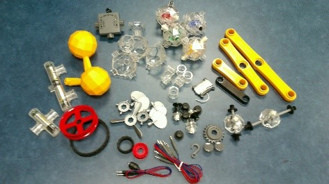
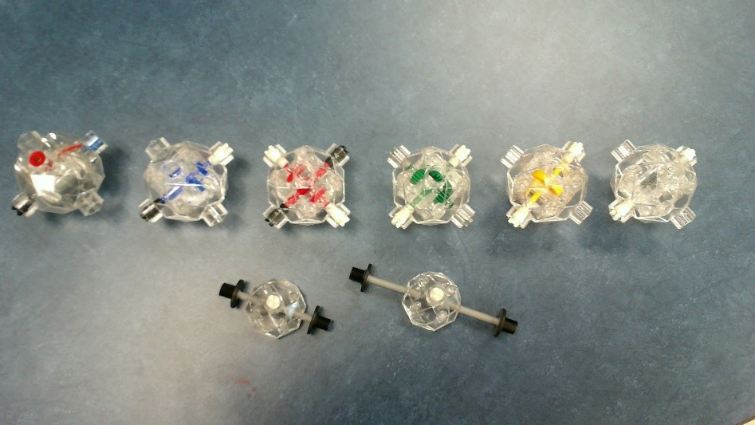
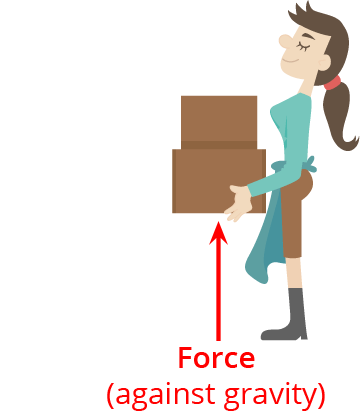
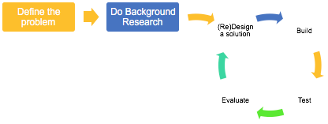
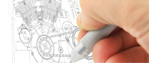
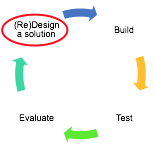
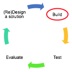
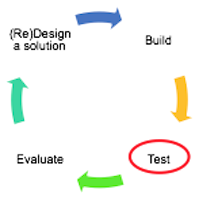

What You Should Know
What Is IQ Key?
IQ Key is a toy construction set that allows users to assemble and explore mechanical machines, which are moving parts that perform specific functions.
IQ Key's transparent and connecting capsules help users see and understand how various parts of a machine move and interact.
The parts in your kit may not have the same color as those shown here, but they all will work the same. Look at the parts to see how they fit together. Each capsule is designed to do a specific job. Notice that some capsules look similar.
 
Machines Make Work Easier

The job of a machine is to make work easier.
Force is anything that changes the motion of an object.
Lifting a box is an action that make the object move, so it is an example of force.
Machines Need Energy to Do Work
A machine needs a source of energy in order to do work.
Energy is needed to do work. You give yourself energy by eating nutritious food. Plants get the energy to grow from sunlight and water.
Machines need energy too. An energy source gives energy to the machine so that it can do the work needed to move its many parts.
With some machines, you may be the source of energy, like you see here.
The wind, sun, and batteries are examples of other energy sources.
Engineering Design Process
How will you improve a machine?
The Engineering Design Process are the steps professionals (like engineers) follow to make sure they design the best solutions for the problems they are trying to solve.
It starts by finding a problem to solve and then learning more about that problem. After some research, they enter into the design cycle, which is where they design a solution, build it, test it, evaluate it, and then enter into the cycle again and again to improve the design.

Design Cycle
1. Design
Making a design is the first step in the design cycle, and in creating a new building.
Designs:
- Usually include drawings of the building with measurements of each wall, window, door, and floor
- Include steps for building the foundation (floor), walls, roof, and interior (inside the building)
- Include a list of all the parts needed
2. Build
The design is used to construct the building. The builder and the architect work together to turn the architect's vision into a constructed building.
Builders:
- Collect the materials needed for construction
- Carefully follow the design as they measure and build
3. Test
After a building is designed, architects create a scaled model to make sure their design will work.
Testing includes:
- Designing a scaled model
- Executing the scaled model
- Collecting observations about how it looks and functions
- Analyzing the observations to make changes
For example, if the goal is to design a building that fits in a 500 x 800 foot space and the doors of the building would be blocked by the office next door, the design will need to change.
4. Evaluate
To evaluate means to review or compare the data in order to understand the performance of the design.
Evaluating observations helps answer questions like the ones below.
- How did the model look?
- Will the model work for all people? What changes in the design will make the building accessible to all?
- Think about the height and width of ceilings and door openings.
- Will a person in a wheelchair be able to get into the building?
- How will people get into and out of the building? How will they move throughout?
- What can we do to improve the design?
The design cycle is a cycle, meaning it repeats. If the evaluation shows that design improvements need to be made, the entire four-step cycle can be repeated as many times as needed.